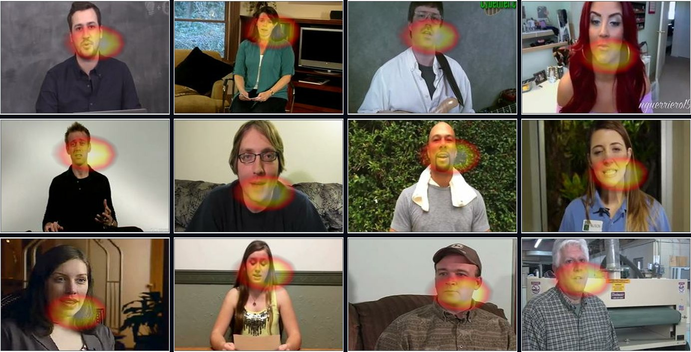
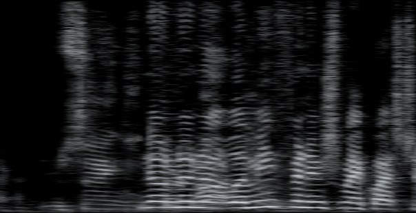
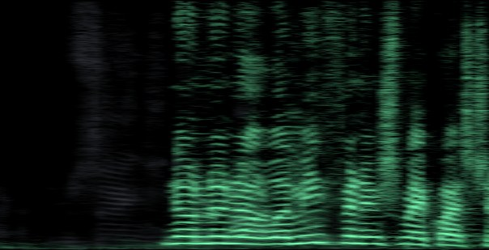
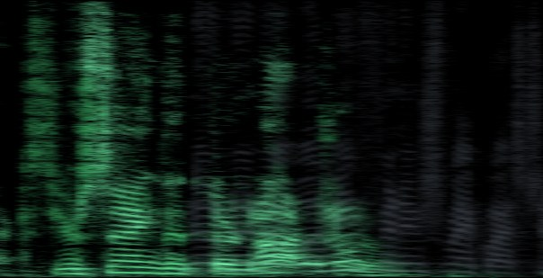

Does this sound
belong to
this video?
Audio-Visual Scene Analysis with
Self-Supervised Multisensory Features
Self-Supervised Multisensory Features
Andrew Owens, Alexei A. Efros · UC Berkeley · ECCV 2018
Dominic IllKevin StöckliSimon Thut
Paper presentation · Mixed Reality HS 2026 · Team 11 / 5
Free labels: shift the soundtrack
0 labels
≈ 750,000 unlabeled videos
59.9%network
66.6%people
50%chance
in sync or not?
Owens & Efros 2018 · Sec. 32 / 5
What does the network learn?
The heat shows where it finds the evidence for "in sync".
Mostly speech

Other motions, too
 chopping woodshuffling cards
dribblingplaying bass guitar
chopping woodshuffling cards
dribblingplaying bass guitar
Owens & Efros 2018 · poster "What does the network learn?" · class activation maps, Figs. 3 and 53 / 5
Application: action recognition
Accuracy on UCF-101 in %
82.1
77.6
68.1
68.1
60.3
84.2
94.5
FullNo audioScratchI3D scratchO3NI3D + ImageNetI3D + Kinetics
this paperotherspretrained with labels
- Pretraining and sound help
- Beats other self-supervised features
- Still trails the best supervised ones
Owens & Efros 2018 · poster "Application: action recognition" · Table 1 (UCF-101 split 1)4 / 5
Application: source separation
Training: mix two videos' sound, get both back
video A
+
another video
=
the mix
video A
the mix
network
→
on-screen
off-screen
No labels: we mixed the two sounds ourselves.
On real video: hide a face, lose a voice



Sync is a free label. It ties motion to sound.
Owens & Efros 2018 · poster "Application: source separation" · Sec. 6, Fig. 1c5 / 5